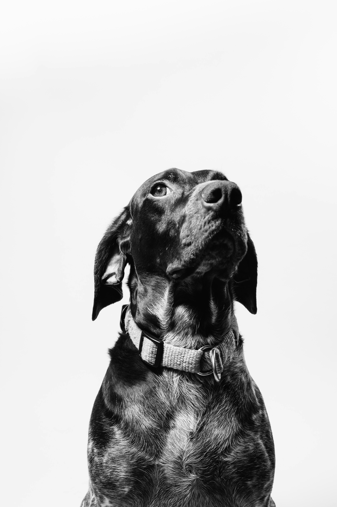
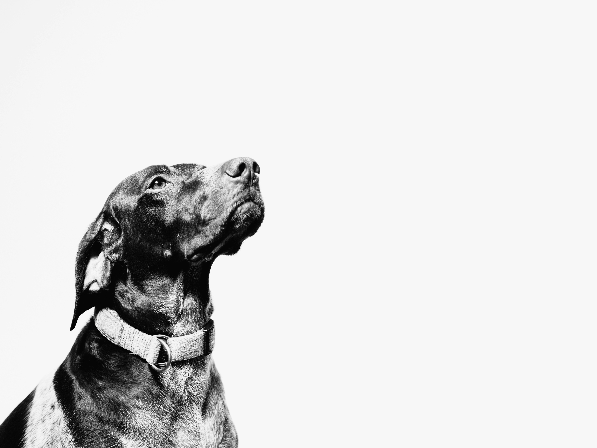
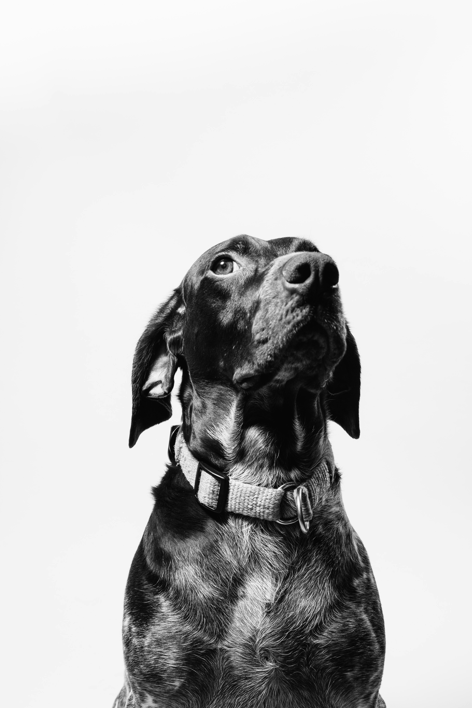
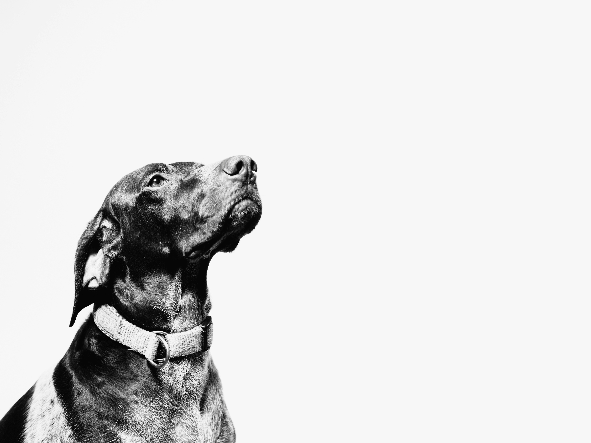
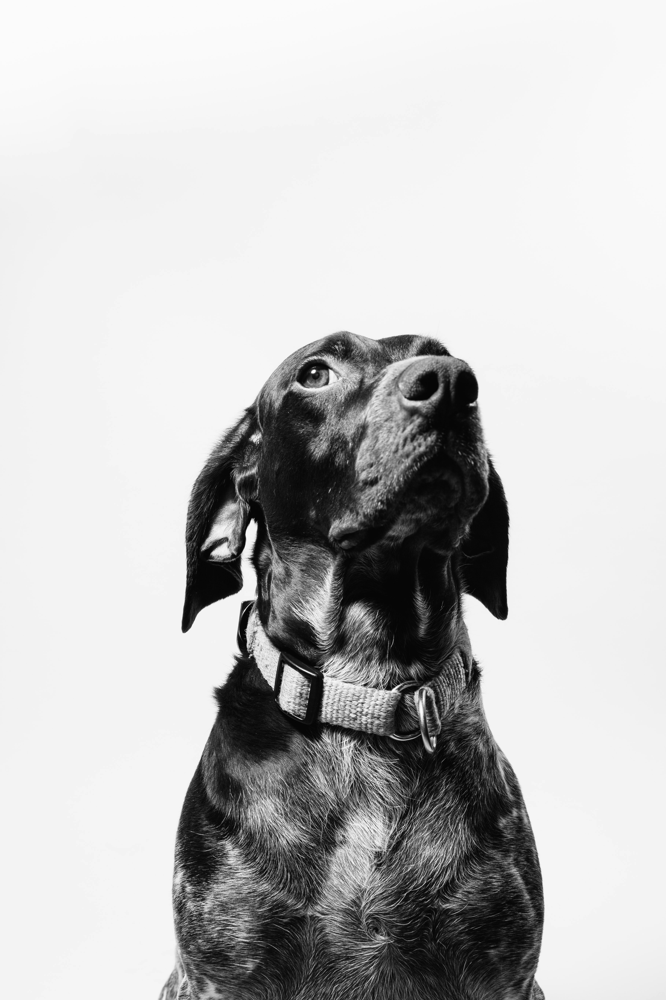
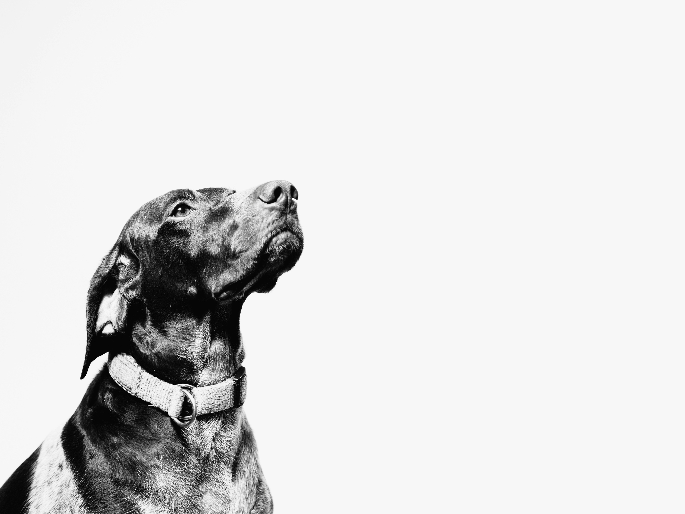
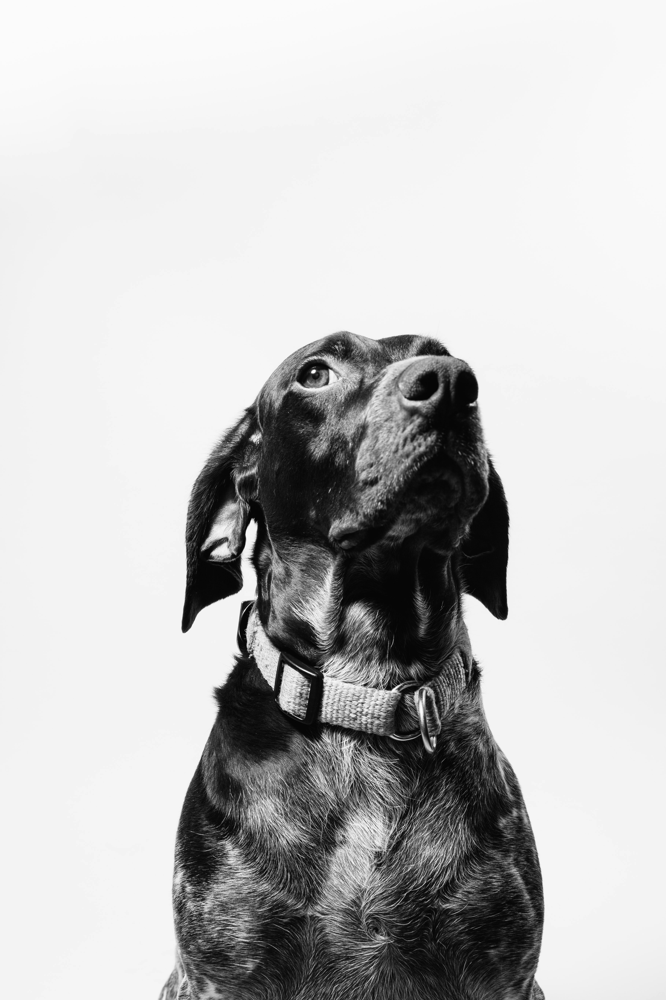
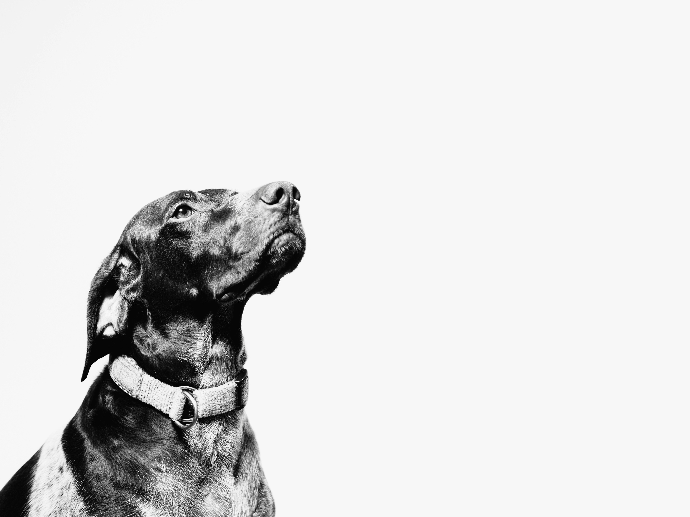
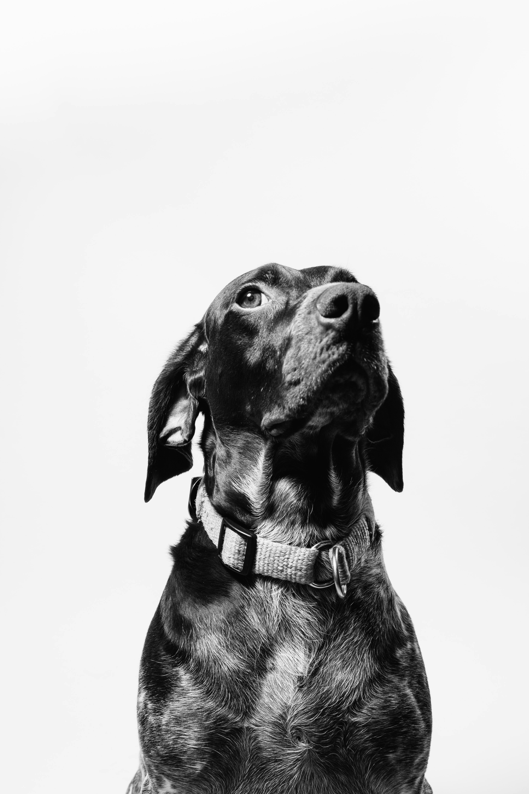
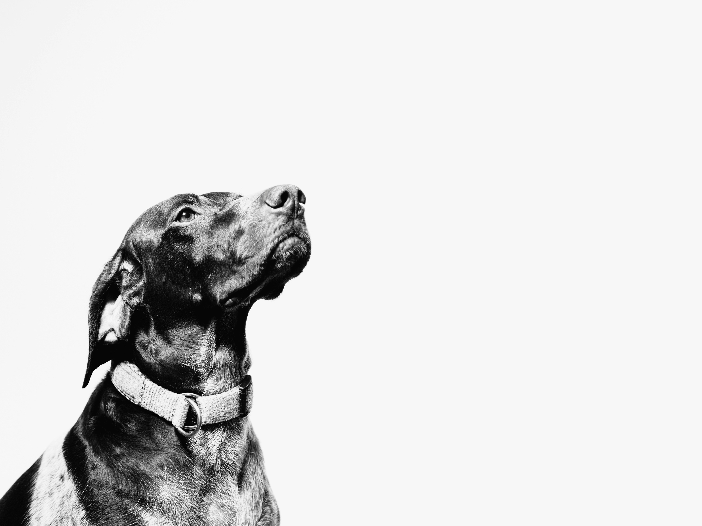

Visual Design
Thank you for visiting my portfolio, please see below for Assessments 1 (Manipulation of Images) & 2 (3 Prototypes and a GIF).
Assessment one, 6 images.
Original images before manipulation
 
Images after manipulation
Assessment two, 3 Prototypes and a GIF
Desktop One, Desktop two and iPad Pro


 






